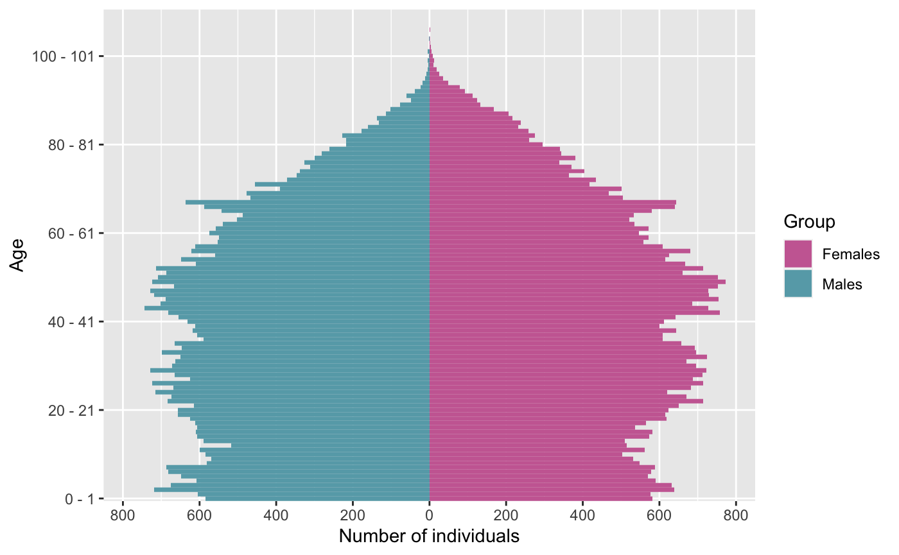
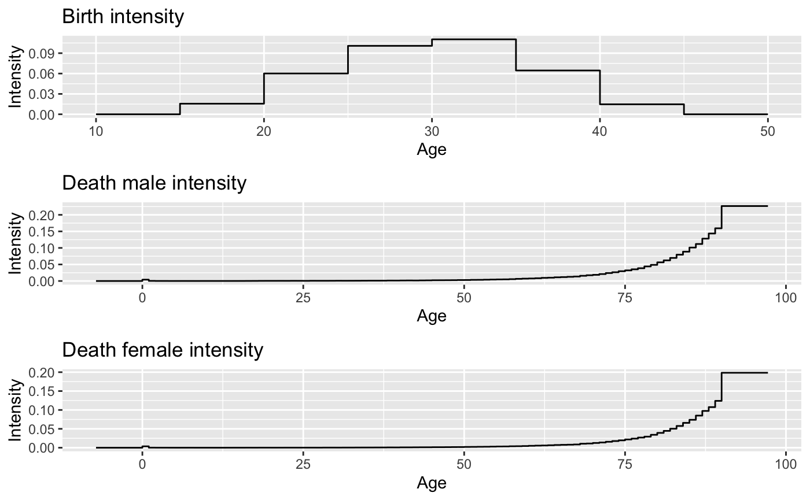
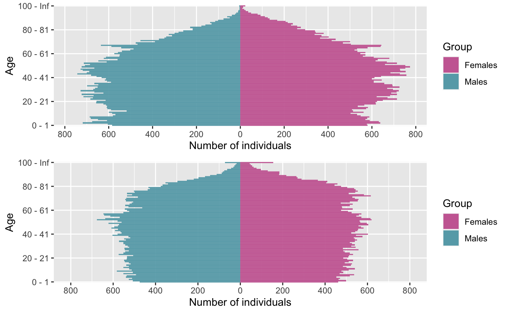
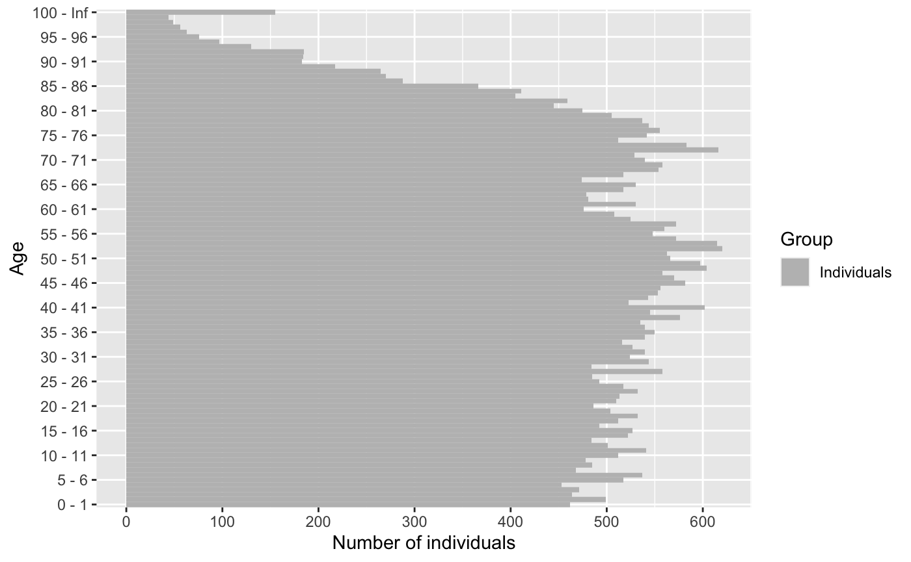
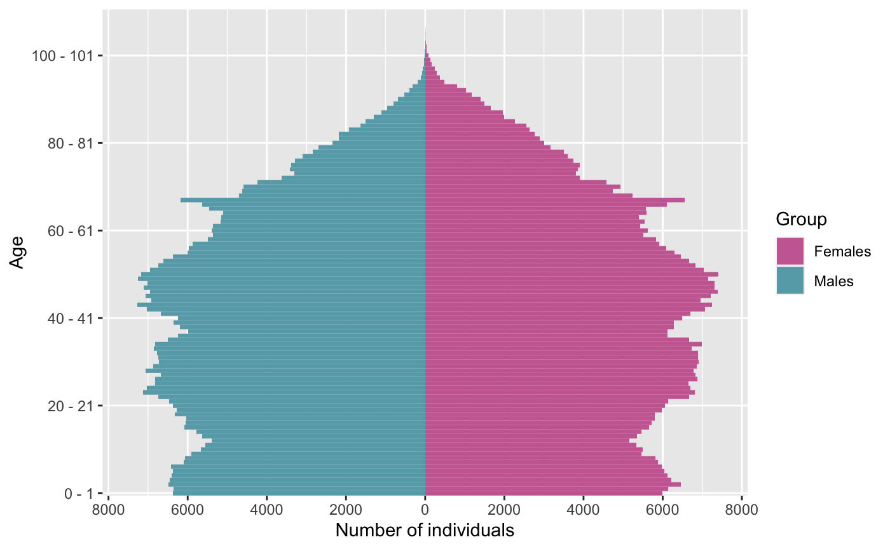
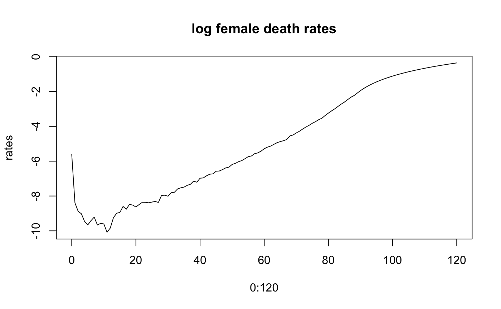
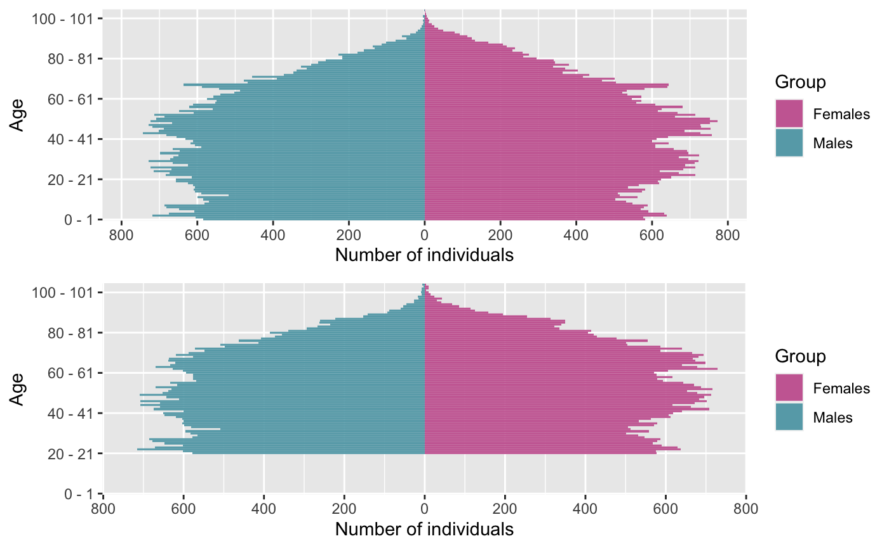
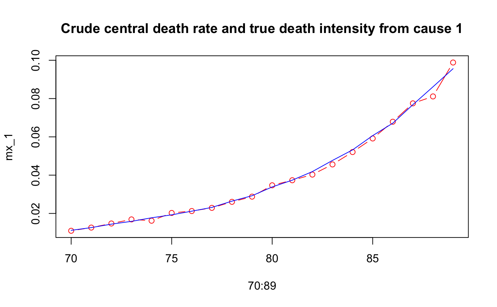

vignettes/IBMPopSim-human_pop.Rmd
IBMPopSim-human_pop.RmdThis document provides an first simple example of usage of the package IBMPopSim, for simulating a human population with only birth and death events.
We consider a population where individuals are marked by their age and gender (male or female).
Two events can occur to an individual, who can give birth (only if female) or die. Birth and death intensities depend on the individuals’ age and gender, but stay constant over time. In this toy model, birth and death intensities are fitted to England and Wales 2014 birth and death rates (source: Office for National Statistics).
The inital population is a 100 000 individuals population sampled from England and Wales’ 2014 age pyramid distribution (source: Office for National Statistics).
str(EW_pop_14)
## List of 3
## $ age_pyramid:'data.frame': 232 obs. of 3 variables:
## ..$ age : Factor w/ 116 levels "0 - 1","1 - 2",..: 1 1 2 2 3 3 4 4 5 5 ...
## ..$ male : logi [1:232] FALSE TRUE FALSE TRUE FALSE TRUE ...
## ..$ value: num [1:232] 323863 340320 332357 350346 344972 ...
## $ rates :List of 3
## ..$ birth :'data.frame': 7 obs. of 2 variables:
## .. ..$ age : num [1:7] 15 20 25 30 35 40 45
## .. ..$ value: num [1:7] 0.0156 0.0601 0.1008 0.1104 0.0645 ...
## ..$ death_male :'data.frame': 91 obs. of 2 variables:
## .. ..$ age : int [1:91] 0 1 2 3 4 5 6 7 8 9 ...
## .. ..$ value: num [1:91] 4.03e-03 3.60e-04 1.52e-04 1.35e-04 7.73e-05 ...
## ..$ death_female:'data.frame': 91 obs. of 2 variables:
## .. ..$ age : int [1:91] 0 1 2 3 4 5 6 7 8 9 ...
## .. ..$ value: num [1:91] 0.003634 0.000226 0.000139 0.000121 0.000078 ...
## $ sample :'data.frame': 100000 obs. of 3 variables:
## ..$ birth: num [1:100000] -107 -107 -105 -104 -104 ...
## ..$ death: num [1:100000] NA NA NA NA NA NA NA NA NA NA ...
## ..$ male : logi [1:100000] FALSE FALSE TRUE FALSE FALSE FALSE ...plot_population(EW_pop_14$sample)

params <- with(EW_pop_14$rates, list( "p_male" = 0.512, # probability to give birth to a male. "birth_rate" = stepfun(x=birth[,"age"], y=c(0,birth[,"value"])), "death_male" = stepfun(x=death_male[,"age"], y=c(0,death_male[,"value"])), "death_female" = stepfun(x=death_female[,"age"], y=c(0,death_female[,"value"])) ) )
lbl = labs(x="Age", y="Intensity") thm = theme(plot.title = element_text(hjust = 0.5)) grid.arrange( autoplot(params$birth, shape = NULL) + ggtitle("Birth intensity") + lbl, autoplot(params$death_male, shape = NULL) + ggtitle("Death male intensity") + lbl, autoplot(params$death_female, shape = NULL) + ggtitle("Death female intensity") + lbl )

There are 2 possible events :
Both event intensities are of type individual, which means that the intensity at which an individual gives birth or dies only depends on his age and characteristics, and not on other individuals characteristics (in other word, there are no interactions).
The birth and the death intensities are bounded step functions, which are constant over time.
Birth event creation
birth_event <- mk_event_individual( type = "birth", intensity_code = "if (I.male) result = 0; else result = birth_rate(age(I, t));", kernel_code = "newI.male = CUnif(0, 1) < p_male;" # The gender of the newborn is male with probability p_male )
Death event creation
death_event <- mk_event_individual( type = "death", intensity_code = "result = (I.male) ? death_male(age(I, t)) : death_female(age(I, t));" )
model <- mk_model( characteristics = get_characteristics(EW_pop_14$sample),# Characteristics names ant type events = list(birth_event, death_event), # Model events parameters = params # Model parameters ) summary(model)
## Events:
## #1: individual event of type birth
## #2: individual event of type death
## ---------------------------------------
## Individual description:
## names: birth death male
## R types: double double logical
## C types: double double bool
## ---------------------------------------
## R parameters available in C++ code:
## names: p_male birth_rate death_male death_female
## R types: double closure closure closure
## C types: double function_x function_x function_xComputation of event intensity bounds (needed for acceptance/rejection algorithm)
sim_out <- popsim(model = model, population = EW_pop_14$sample, # Initial population events_bounds = c('birth' = birth_max, 'death' = death_max), # Vector of #intensity bounds, with name corresponding to events name. parameters = params, time = 50, age_max = 120, multithreading = TRUE)
## [1] "birth" "death"
## [1] "birth" "death"
## [1] "birth" "death"
## Simulation on [0, 50]Simulation logs
sim_out$logs
## proposed_events effective_events cleanall_counter
## 1.685277e+06 1.142270e+05 6.000000e+00
## duration_main_algorithm
## 9.668500e-02The ratio of accepted events is
sim_out$logs[["effective_events"]] / sim_out$logs[["proposed_events"]]
## [1] 0.06777936Outputs
sim_out$population is a data frame composed of all individuals who lived in the population over the period [0,50] (individuals in the initial population and born during the simulation period).
Each line corresponds to an individual, with his date of birth, date of death (NA if still alive at the end of the simulation) and gender.
The function age_pyramidcomputes the age pyramid of a population data frame at a given time.
pyr_init = age_pyramid(sim_out$population, time = 0,ages = c(0:100,Inf)) pyr = age_pyramid(sim_out$population, time = 50, ages=c(0:100,Inf)) grid.arrange(plot_pyramid(pyr_init), plot_pyramid(pyr,value_breaks = seq(0,800,200)))

Female age pyramid
plot_pyramid(pyr[pyr$male==FALSE,c("age","value")], age_breaks = as.integer(seq(1,101,5)))

age_pyramids returns a data frame representing the population age pyramids at different times.
#pyrs = age_pyramids(sim_out$population, time = 1:50)
#library(gganimate)
#plot_pyramid(pyrs) + transition_time(time) + labs(title = "Time: {frame_time}")The population evolution can be simulated starting from a different initial population, without having to recompile the model.
pop_sample_1e6 <- popsample(EW_pop_14$age_pyramid, size = 1e6)
plot_population(pop_sample_1e6)

sim_out <- popsim(model = model, population = pop_sample_1e6, # Initial population events_bounds = c('birth' = birth_max, 'death' = death_max), # Vector of #intensity bounds, with name corresponding to events name. parameters = params, time = 50, age_max = 120, multithreading = TRUE)
## [1] "birth" "death"
## [1] "birth" "death"
## [1] "birth" "death"
## Simulation on [0, 50]sim_out$logs
## proposed_events effective_events cleanall_counter
## 1.678573e+07 1.134368e+06 6.000000e+00
## duration_main_algorithm
## 1.293690e+00Events intensities and/or kernels can be modified by changing the parameters value.
In the first toy model, mortality rates are assumed to be constant after age 90, with a maximum age of 120 in the population. This leads to a significant increase in the number of individuals of age over 100, even though mortality rates don’t change over time in this model.
A more realistic assumption is to assume that mortality rates increases after age 90, by changing the model parameters death_male and death_female. The two step functions are replaced by functions of type piecewise_x, composed of a step function before age 90 and a linear function after for older ages.
death_male_90 <- params$death_male old_death_male <- linfun(x = c(89,120), y = c(death_male_90(89), 0.7)) params$death_male <- piecewise_x(c(89), list(death_male_90,old_death_male)) death_female_90 <- params$death_female old_death_female <- linfun(x = c(89,120), y = c(death_female_90(89), 0.7)) params$death_female <- piecewise_x(c(89), list(death_female_90,old_death_female))

Once the new model parameters have be defined, the event bounds must be updated.
sim_out_lin <- popsim(model = model, population = pop_sample_1e6, # Initial population events_bounds = c('birth' = birth_max, 'death' = 0.7), # New death intensity bound is 0.7 parameters = params, time = 50, age_max = 120)
## [1] "birth" "death"
## [1] "birth" "death"
## [1] "birth" "death"
## Simulation on [0, 50]The modification of the shape of mortality rates for ages over 90 generates a decrease of around 10% in the individuals aged over 100 after 50 years of simulation.
pop_size_90plus_const <- nrow(population_alive(sim_out$population,t = 50,a1=90)) pop_size_90plus_lin <- nrow(population_alive(sim_out_lin$population,t = 50,a1=90)) (pop_size_90plus_const-pop_size_90plus_lin)/pop_size_90plus_const*100
## [1] 5.02529sim_out <- popsim(model = model, population = EW_pop_14$sample, events_bounds = c('birth' = 0, 'death' = death_max), parameters = params, age_max = 130, time = 50)
## [1] "birth" "death"
## [1] "birth" "death"
## [1] "birth" "death"
## [1] "event birth is deactivated"
## Simulation on [0, 50]The age pyramid can be directly plotted from the population data frame with plot_population
grid.arrange( plot_population(sim_out$population, time=0, ages= 0:105), plot_population(sim_out$population, time=20, ages= 0:105) )

age_pyramid(sim_out$population, ages = seq(70,90,10), time = 30)
## age male value
## 1 70 - 80 FALSE 5795
## 2 70 - 80 TRUE 5102
## 3 80 - 90 FALSE 3622
## 4 80 - 90 TRUE 2763The number of children of each women in the population can be recorded by adding a new characteristics (here named children) and changing the birth event kernel code.
chi <- get_characteristics(EW_pop_14$sample)
chi <- c(chi, 'children' = 'int') # Addition of characteristics children in the model chi
## male children
## "bool" "int"Birth event with children count
new_birth_event <- mk_event_individual( type = "birth", name ="birth_child", intensity_code = "if (I.male) result = 0; else result = birth_rate(age(I, t));", kernel_code = " newI.male = CUnif(0, 1) < p_male; newI.children = 0; I.children += 1;" #When event occur, I.children is increased of one to count the number of children of I )
model_child <- mk_model( characteristics = chi, events = list(new_birth_event, death_event), parameters = params ) summary(model_child)
## Events:
## #1: individual event of type birth
## #2: individual event of type death
## ---------------------------------------
## Individual description:
## names: birth death male children
## R types: double double logical integer
## C types: double double bool int
## ---------------------------------------
## R parameters available in C++ code:
## names: p_male birth_rate death_male death_female
## R types: double closure closure closure
## C types: double function_x function_x function_x## birth death male children
## 1 -106.9055 NA FALSE 0
## 2 -106.8303 NA FALSE 0
## 3 -104.5097 NA TRUE 0
## 4 -104.2218 NA FALSE 0
## 5 -103.5225 NA FALSE 0
## 6 -103.3644 NA FALSE 0sim_out <- popsim(model_child, population = init_pop, events_bounds = c('birth_child' = birth_max, 'death' = death_max), parameters = params, time = 100, age_max = 120, multithreading=TRUE)
## [1] "birth_child" "death"
## [1] "birth_child" "death"
## [1] "birth_child" "death"
## Simulation on [0, 100]# Females of age over 50 alive at time 100: pop_female_time <- population_alive(subset(sim_out$population, male == F), t= 100, a1= 50) dim(pop_female_time)[1]# Number of females over 100
## [1] 16818ggplot(pop_female_time, aes(x=as.factor(children)))+ geom_bar(aes(y = (..count..)/sum(..count..)))+ scale_y_continuous(labels=scales::percent) + labs(title="Distribution of the number of children for women aged over 50 at time 100",x="Number of children", y="")
mean(pop_female_time$children) #Mean number of children
## [1] 1.836009In order to model different competing causes of death, several “death” events can be created, each modelling one cause of death.
We assume that individuals can from two main causes of death 1 and 2, supposed to be independent. Then, the death intensity at age \(a\) is
\[ \mu(a) = \mu_1(a) + \mu_2(a),\]
with \(\mu_i(a)\) the death intensity at age \(a\) associated with cause \(i\).
This model can be simulated with two death events associated to cause 1 and 2, and adding a new characteristic recording the cause of death.
chi <- get_characteristics(pop_sample_1e6) chi <- c(chi, 'CoD' = 'int')
params$CoD1_prop <- 0.6
death_event1 <- mk_event_individual(type = "death", name="CoD1", intensity_code = "if (I.male) result = CoD1_prop*death_male(age(I,t)); else result= CoD1_prop*death_female(age(I,t));", kernel_code = "I.CoD =1;" # Records cause of death when event occurs. ) death_event2 <- mk_event_individual(type = "death", name="CoD2", intensity_code = "if (I.male) result = (1-CoD1_prop)*death_male(age(I,t)); else result= (1-CoD1_prop)*death_female(age(I,t));", kernel_code = "I.CoD =2;" # Records cause of death when event occurs. )
# Model creation model_CoD <- mk_model( characteristics = chi, events = list(birth_event, death_event1, death_event2), parameters = params)
str(model_CoD)
## List of 6
## $ individual_type :List of 3
## ..$ names : chr [1:4] "birth" "death" "male" "CoD"
## ..$ typesR: chr [1:4] "double" "double" "logical" "integer"
## ..$ typesC: chr [1:4] "double" "double" "bool" "int"
## $ parameters_types:List of 4
## ..$ names : chr [1:5] "p_male" "birth_rate" "death_male" "death_female" ...
## ..$ typesR : chr [1:5] "double" "closure" "closure" "closure" ...
## ..$ typesC : chr [1:5] "double" "function_x" "function_x" "function_x" ...
## ..$ lengths: Named int [1:5] 1 1 1 1 1
## .. ..- attr(*, "names")= chr [1:5] "p_male" "birth_rate" "death_male" "death_female" ...
## $ events :List of 3
## ..$ :List of 5
## .. ..$ name : chr "birth"
## .. ..$ type : chr [1:2] "individual" "birth"
## .. ..$ intensity_code: chr "if (I.male) result = 0; else result = birth_rate(age(I, t));"
## .. ..$ kernel_code : chr "newI.male = CUnif(0, 1) < p_male;"
## .. ..$ cpp_code : chr "// Event \"birth\"\nstruct event_J_ : public event {\n double __lambda(unsigned k, population const & pop, d"| __truncated__
## .. ..- attr(*, "class")= chr "event"
## ..$ :List of 5
## .. ..$ name : chr "CoD1"
## .. ..$ type : chr [1:2] "individual" "death"
## .. ..$ intensity_code: chr "if (I.male) result = CoD1_prop*death_male(age(I,t)); \n el"| __truncated__
## .. ..$ kernel_code : chr "I.CoD =1;"
## .. ..$ cpp_code : chr "// Event \"CoD1\"\nstruct event_J_ : public event {\n double __lambda(unsigned k, population const & pop, do"| __truncated__
## .. ..- attr(*, "class")= chr "event"
## ..$ :List of 5
## .. ..$ name : chr "CoD2"
## .. ..$ type : chr [1:2] "individual" "death"
## .. ..$ intensity_code: chr "if (I.male) result = (1-CoD1_prop)*death_male(age(I,t)); \n "| __truncated__
## .. ..$ kernel_code : chr "I.CoD =2;"
## .. ..$ cpp_code : chr "// Event \"CoD2\"\nstruct event_J_ : public event {\n double __lambda(unsigned k, population const & pop, do"| __truncated__
## .. ..- attr(*, "class")= chr "event"
## $ cpp_code : chr "// -*- coding: utf-8 -*-\n//[[Rcpp::depends(IBMPopSim)]]\n//[[Rcpp::depends(RcppArmadillo)]]\n//[[Rcpp::plugins"| __truncated__
## $ sourceCpp :List of 4
## ..$ functions : chr "popsim_cpp"
## ..$ modules : chr(0)
## ..$ cppSourcePath : chr "/private/var/folders/mb/3wx92xxx253492xvw_zv8x680000gn/T/RtmpNHv0Lc/sourceCpp-x86_64-apple-darwin19.4.0-1.0.4.6"| __truncated__
## ..$ buildDirectory: chr "/private/var/folders/mb/3wx92xxx253492xvw_zv8x680000gn/T/RtmpNHv0Lc/sourceCpp-x86_64-apple-darwin19.4.0-1.0.4.6"| __truncated__
## $ popsim_cpp :function (pop_df, events_bounds, parameters, age_max, T0, T, clean_step,
## clean_ratio, seed, multithreading, num_threads = NA_integer_, verbose = FALSE)
## - attr(*, "class")= chr "model"init_pop_CoD <- cbind(pop_sample_1e6, "CoD"=NA) # Initial population
ev_bounds <- c('birth' = birth_max, 'CoD1' = params$CoD1_prop*death_max, 'CoD2' = (1-params$CoD1_prop)*death_max) sim_out_CoD <- popsim(model_CoD, population = init_pop_CoD, events_bounds = ev_bounds, parameters = params, time = 20, age_max = 120, multithreading=TRUE)
## [1] "birth" "CoD1" "CoD2"
## [1] "birth" "CoD1" "CoD2"
## [1] "birth" "CoD1" "CoD2"
## Simulation on [0, 20]The number of death for given age groups, time periods and for each cause of death can be computed with death_table.
# For each cause: number of death from males of age between [70,90] (single year of age groups) over the 5-year period [15,20] Dx_1 <- death_table(subset(sim_out_CoD$population, CoD==1 & male==T),ages = 70:90, times = c(15,20)) Dx_2 <- death_table(subset(sim_out_CoD$population, CoD==2 & male==T),ages = 70:90, times = c(15,20))
Ex <- exposure_table(subset(sim_out_CoD$population, male==T),ages = 70:90, times = c(15,20)) # Central exposure to risk mx_1 <- Dx_1/Ex # Males central death rates by for Cause 1 mx_2 <- Dx_2/Ex
plot(70:89,mx_1, col="red",type="b",main="Crude central death rate and true death intensity from cause 1") lines(70:89,params$CoD1_prop*params$death_male(70:89),col = "blue")
